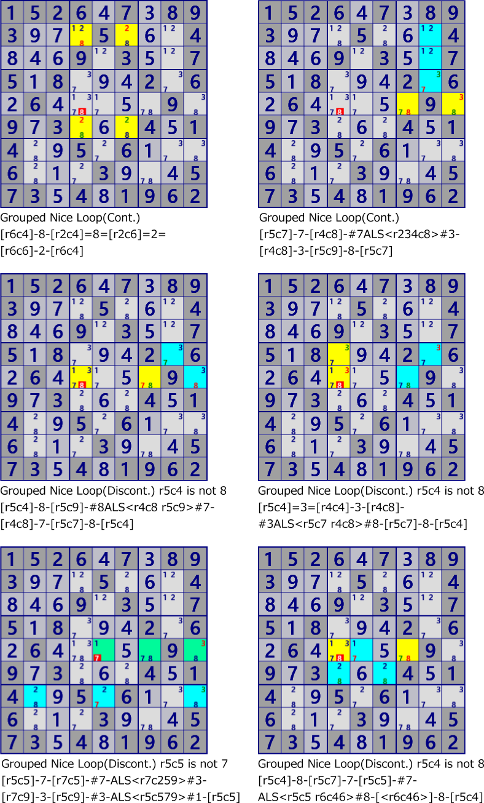

GroupedNiceLoop
GroupedNiceLoop is a super link version of NiceLoop.
GroupedNiceLoop is a chain of Inter-cell link, Grouped Cells link, ALS link.
Link continuity is the same as NiceLoop.
The following figure are example of GroupedNiceLoop.
These are solutions of the same scene of the same problem.
There are more than 50 solutions and are only a few of them.
These solutions are found with
GNPX(Set skyscraper-ALS method off).
